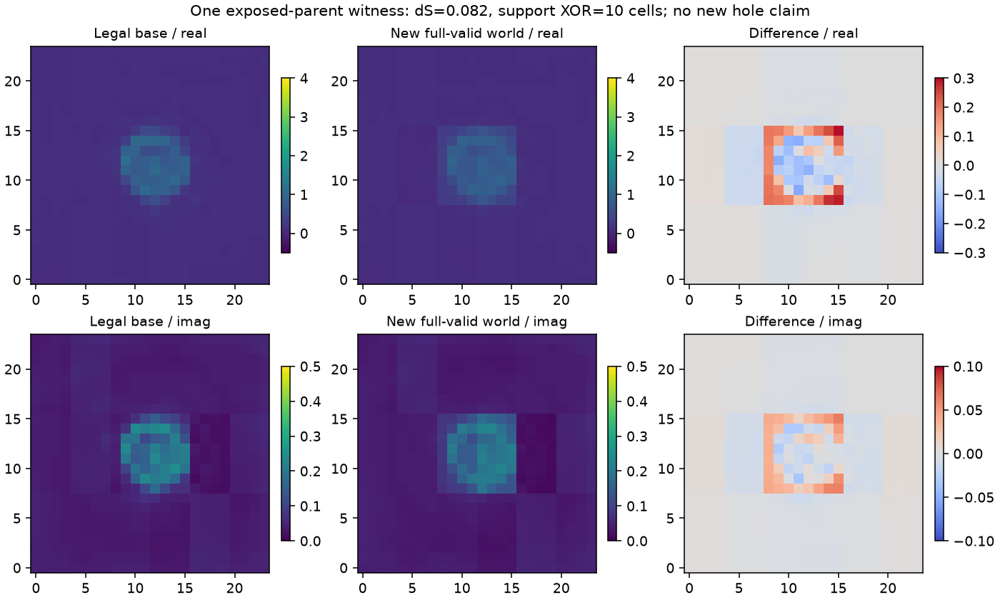
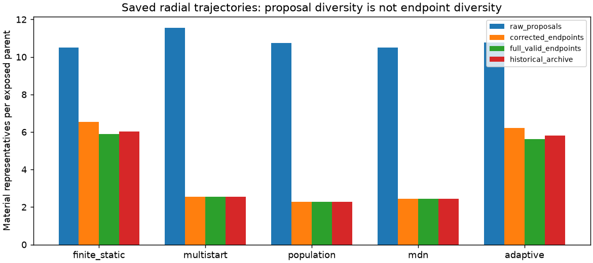

生成更多图，还是发现更多材料世界？
Research G · 2026-10-15 · topology-class-free search · candidate-only
当前判断：NO_GO_SEARCH，保留一个真实物理witness，暂不扩大。三观测的结构代表为1/2/1，新增只有一个边界world，未发现新孔洞。所有方法Best-of-4仍为0.04224802。仅三个已曝光合格parent，T-guided未运行，不能宣称复杂搜索或学习策略获胜。
291/384 states · 6936/12288 complex RHS · GPU0
八个直接回答
- 三个观测各有3、3、1个材料代表和1、2、1个结构代表（都含base）。新增结构只有一个；两轮重复同一world不能算两次。它是边界/支撑变化，不是新孔洞拓扑。
- bandit在首轮36states/864RHS中命中这一个结构，另外三方法为0；这是单对象描述性命中，没有稳定优越性证据。
- 所有方法两轮平均复材料MAE均0.04224802，和base相同；没有最佳新方法。
- 唯一新结构从不相容raw提案修正为相容，投影retention约.138；大量其余提案失败或回到既有邻域，不能只数raw多样性。
- 径向32-parent分组验证中，增加历史没有稳定改善下一结构预测。失败/材料重复存在关联，不能推出更好的反事实动作。
- 没有建立持续、跨对象地超过continuous-scale static/multi-start；G实验冻结时未接入完整T包，T-guided未运行，因此完整五臂比较未完成。
- 不值得现在训练；先积累共同corrector下的跨对象结构发现轨迹。
- 尚不具备资格。保留真实二维witness与失败，不由一个近门槛边界变化升级为一般3D机制。
匹配完整物理成本的四臂结果
| 方法 | states | 复RHS | 合法端点 | 材料新颖 | 结构新颖 | Best-of-4复MAE | Coverage |
|---|
| multistart | 36 | 864 | 2/9 | 0 | 0 | 0.04224802 | 33.3% |
| static_scale | 36 | 864 | 2/9 | 1 | 0 | 0.04224802 | 33.3% |
| QD | 36 | 864 | 2/9 | 2 | 0 | 0.04224802 | 33.3% |
| bandit | 36 | 864 | 3/9 | 1 | 1 | 0.04224802 | 33.3% |
首轮：各方法3parent×3proposal。第二轮只改archive质量替换，结果相同。共享3base/24RHS全局记一次。单次bandit命中不是跨对象优越性；TopK不足不填invalid。
一个实际full-Maxwell相容的边界变化

同一观测，base残差20.892，新材料22.318，阈值23.785。新提案经两步修正从89.946降至相容；共享本构与solver缺陷约1.4e-15。dS=.081767、support差10格，孔数均0；门槛加倍则不再计为结构不同。两轮相同world只算一次。
raw多样性为何不能替代修正后发现

历史径向multi-start的331/384个raw新颖提案回到已知邻域。二维保护格原样保留但未相容，不能笼统解释为填孔。历史对下一结构预测无稳定额外增益。
明确保留的失败
54/72个新endpoint不相容；24/144个QP未达收敛flag。p250077真实洞仍未覆盖。三个对象是按合法base预先筛选的暴露development，不能与原八条件失败率混同。新尺度coverage不是旧目标达成。
代码复用原A30二维TM，非新3D。没有训练RL/NN，也没有修改T或借其预算。75张实际原图包含失败；所有current/field/predictions与账本随证据包保留。
复现与下一步
先接T最终Git版本化完整handoff，再用同corrector补齐五臂与跨对象复现。当前不进入PPO/GRPO或非平凡3D。发布状态不改变科学结论。